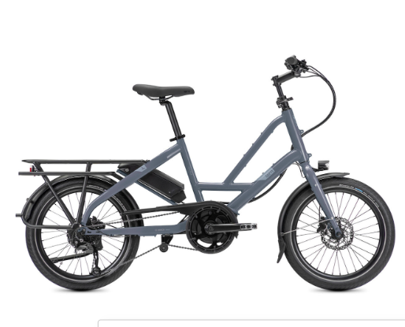
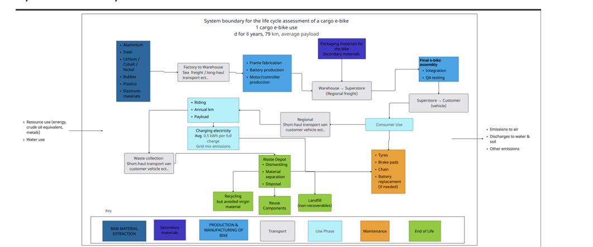
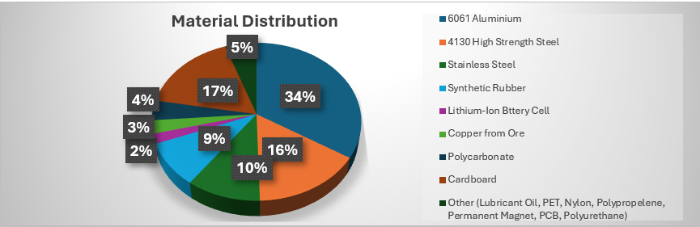
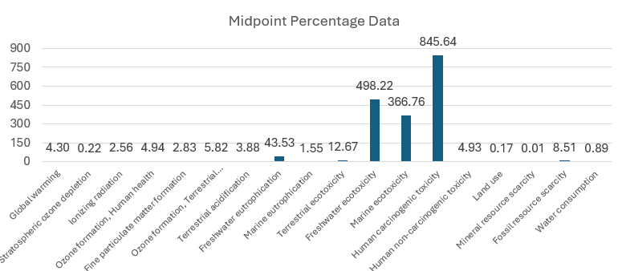
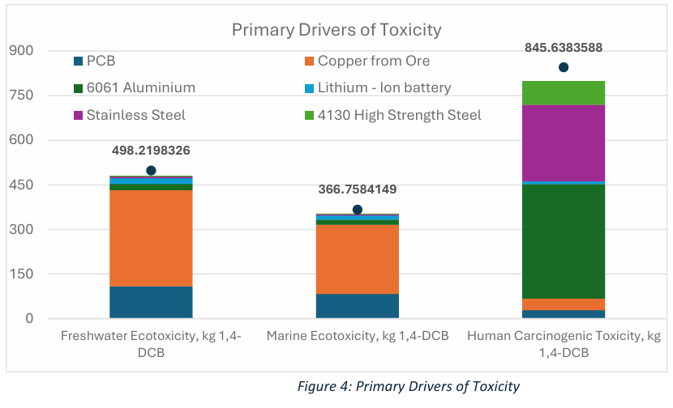
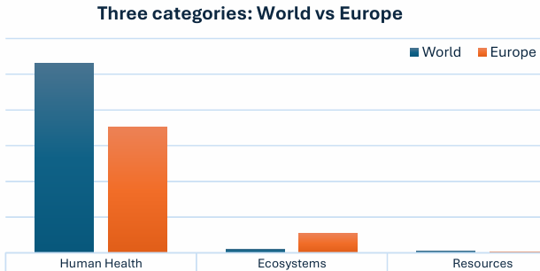
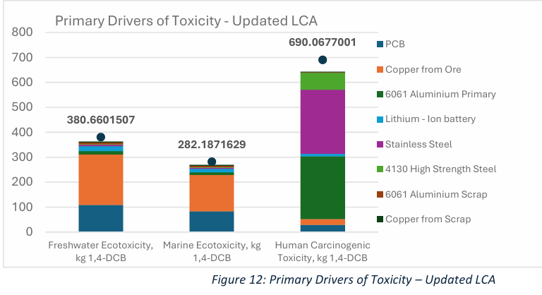
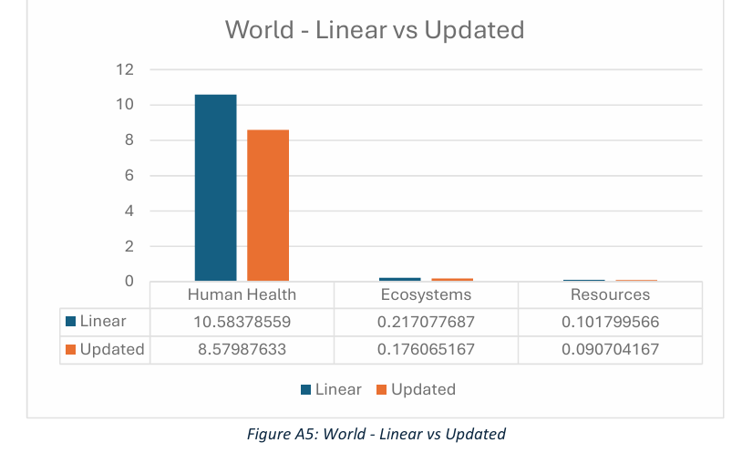
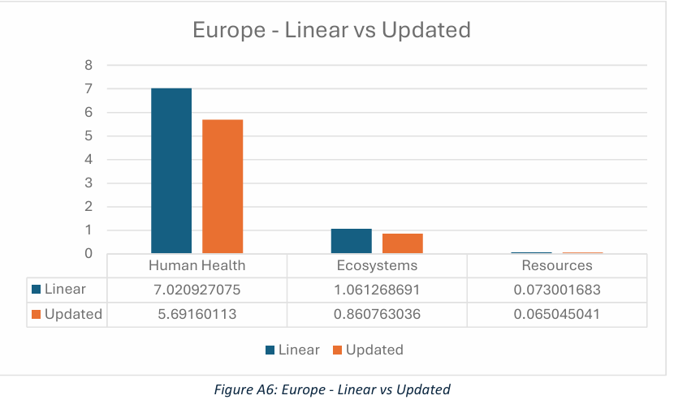

Project Overview
A group Life Cycle Assessment (LCA) of the Tern Quick Haul P9 cargo e-bike, comparing its linear "take-make-dispose" baseline against a redesigned version built around circular-economy principles. Using a functional unit of 300 battery-charging cycles (roughly 23,700 km), the team modelled the bike's full cradle-to-grave impact in Ecoinvent, then targeted material substitutions and a product redesign at the environmental hotspots the LCA identified: chiefly human health damage and ecotoxicity.

Technical Approach
Key techniques
- Built a cradle-to-grave system boundary (raw material extraction through end of life) and a full component-level inventory of the P9's ~22.9 kg build, assigning material data down to individual parts (frame, wheels, transmission, e-system, and brakes) where public data allowed
- Ran a ReCiPe midpoint and endpoint impact assessment across 18 categories in Ecoinvent, normalised against both World and Europe per-person baselines, to identify which materials and impact categories dominated the bike's footprint
- Modelled three targeted design interventions against the same functional unit: a modular repairable battery, a shift from primary to recycled aluminium and copper, and a belt-drive/internal-gear-hub transmission. Then re-ran the full LCA to quantify the improvement

Process steps
- Compiled a full material and component inventory for the Tern Quick Haul P9, including consumables replaced over its operating life (tyres, drivetrain chain)
- Ran the baseline impact assessment and identified six materials (PCB, copper, 6061 aluminium, lithium-ion cells, stainless steel, and 4130 high-strength steel) as the dominant contributors across freshwater ecotoxicity, marine ecotoxicity, and human carcinogenic toxicity
- Designed three interventions targeting those materials directly: a modular battery to replace the sealed Bosch pack, recycled aluminium/copper substitution, and a belt-and-IGH drivetrain in place of the chain-and-derailleur system
- Rebuilt the inventory with the updated material distribution and re-ran the impact assessment to compare against the baseline

Results & Analysis
The baseline assessment showed three impact categories dominating by a wide margin: Freshwater Ecotoxicity, Marine Ecotoxicity, and Human Carcinogenic Toxicity, each more than 99% higher than every other midpoint category. Six materials (PCB and copper driving the ecotoxicity categories; 6061 aluminium, stainless steel, 4130 high-strength steel, and lithium-ion cells driving carcinogenic toxicity) accounted for roughly 70–95% of the bike's total impact across every significant category.



After substituting part of the primary aluminium and copper for recycled material and redesigning the battery and drivetrain, the updated LCA showed:
- Freshwater ecotoxicity down 23.6% (498.2 → 380.7)
- Marine ecotoxicity down 23.1% (366.8 → 282.2)
- Human carcinogenic toxicity down 18.4% (845.6 → 690.1)
- An average reduction of roughly 16% across the remaining midpoint categories. The one exception was terrestrial ecotoxicity, which rose about 14%, traced to the fluxing chemicals released when processing recycled/scrap metal
- At the endpoint level, damage to Human Health fell by roughly 19%, with Ecosystems and Resources, already under 1% of total damage in the baseline, reduced by a further 19% and 11% respectively



Design interventions
- Battery: replaced the sealed, glued Bosch PowerPack 400 (no cell-level repair, no return scheme) with a Gouach-style modular battery: individually replaceable 18650 cells, a screw-assembled aluminium housing, QR-linked material labelling, and USB-C/12V second-life output ports
- Materials: substituted part of the primary 6061 aluminium (10.05 kg down to 6.55 kg primary + 3.5 kg recycled) and primary copper (800 g down to 500 g primary + 300 g recycled) for recycled equivalents, cutting embodied energy from the Hall–Héroult electrolysis and copper-refining stages
- Drivetrain: replaced the chain-and-derailleur system with a belt drive and internal gear hub (IGH), a sealed, low-maintenance system expected to outlast a steel chain 5–10× and cut the lubricant/degreaser waste associated with regular chain maintenance
Business strategy & market position
Alongside the technical redesign, the team proposed a battery buy-back scheme: a 15% discount on a new battery, plus a raffle for a free e-bike, in exchange for returning an end-of-life or damaged pack. This was designed to route batteries back into recycling and remanufacturing rather than landfill. A market comparison against three competitor cargo e-bikes (Tern GSD S10, Yuba Spicy Curry V3, Xtracycle RFA) found none of them offered a modular battery system, second-life battery functionality, or a belt drivetrain, all standard, repairable parts, but no circular business model behind them.
Key learnings
Working through both a ReCiPe midpoint and endpoint assessment made the distinction between potential hazard and actual damage concrete: freshwater and marine ecotoxicity looked dominant at the midpoint level, but barely register at the endpoint stage next to Human Health. That gap shaped which interventions were worth pursuing: reducing primary metal use had by far the largest effect on the categories that actually translate into human health damage.
Team & my contribution
A 6-person group project (Group 15: Callum Thomas, Kifah Raidan, Mubarak Alhijraf, Duncan Eksteen, Mohammed Adeen Khopatkar, and myself). My contribution covered the baseline LCA from end to end: building the initial cargo e-bike model, compiling the full materials inventory (sourcing and weighing data for every component), and modelling the transport phase, including transport distances, freight strategy, and warehouse/distribution-hub selection. I then built the updated LCA once the design interventions were agreed, and was closely involved in the decision-making behind which interventions to pursue; the detailed design work for the agreed interventions (battery, materials, drivetrain) was carried out by the rest of the team.